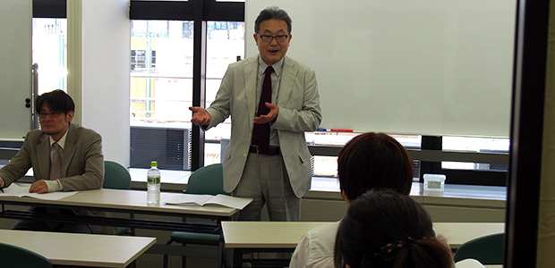
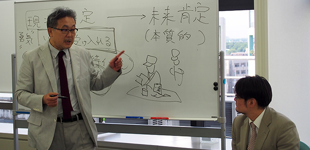
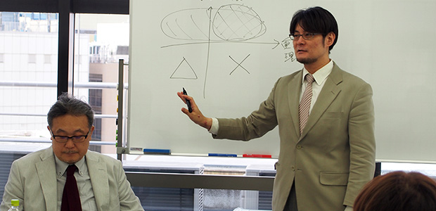

2月～4月の月イチお話会は高校入試シリーズとして受験特集のお話を3回に渡ってお届けしましたが、5月～7月のテーマは「子どもを伸ばす親のあり方」。その第1弾の今回は「子どもの5月病をいかに避けるか」についてのお話です。
少人数ならではのアットホームな雰囲気のなか会が始まりました。
参加された皆さんのほとんどが中学生のお子様をお持ちの保護者の方々でした。新学期が始まり気合で乗り切った4月も終わり、ゴールデンウィークが明けて中間試験が間近に迫っているのにどうも勉強に身が入らない、やる気が出ないお子さんの状況に保護者の皆様もヤキモキしているご様子。
でもそんなお子さんの現状を否定せずいったんは受け入れて未来を肯定すること、マイナスをプラスに捉えることが大事であることをお話しました。

また家庭での学習の姿勢として、目先の点数を追わず日常の生活の中で子ども自身が動けるような経験をさせたりニュースの話題を一緒に考えたり、親が自ら学んでいる姿勢を見せるなど、自然に学習意欲をアップさせる方法もお伝えしました。

参加された方のアンケートを一部紹介
いつもですがお話を聴くと心が柔らかくなります。
子どもに理想を押し付け気味で、勉強しないと、勉強したの？ と言ってしまう自分がいますが、子ども自身が動けるように経験させる、受け入れることを心がけたいと思います。
講演会やセミナー等、何度も参加させていただいて理解したつもりでいましたが、何も分かっていなかったんだなーと思いました。
今回は人数も少なく色々質問させて頂けたので、自分のことにおきかえて理解できました。ありがとうございます。
いつも様々なお話がきけて楽しかったです。
子どもへ期待する時に自分自身を見返すということに気づかされたのがとてもよかったです。
皆さん熱心に耳を傾け講師の話にうなずきながら、日頃のお子さんとの接し方を振り返っている様子でした。是非今日のお話をご家庭で実践していただき、お子さんを見守っていただきたいと思います。
今回は質疑応答の時間を多く設け実際のご家庭での様子を伺うことで講師陣と参加者の距離が非常に近いお話会となりました。
参加された皆さんにとっても有意義な時間になったのではないでしょうか。
次回6月は「勉強のできる子の親 4つのタイプ」についてお話します。究極の勉強法についても伝授いたしますので是非ご参加ください！
いつも参加いただいているリピーターの方、初めて参加くださった方、ARCSの月イチお話会にご参加いただき誠にありがとうございます。
今後もARCSでは思春期のお子さまをお持ちの方へ有益な情報を発信してまいります。